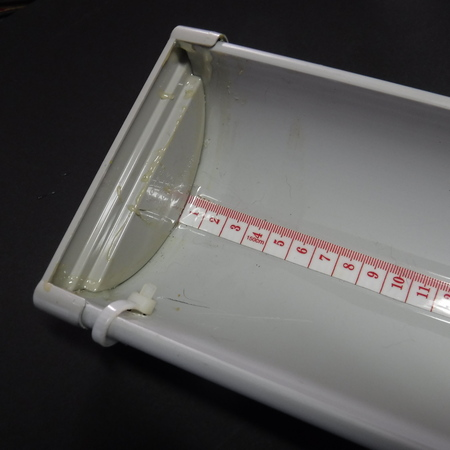
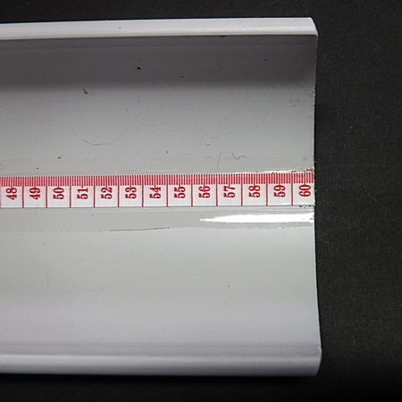
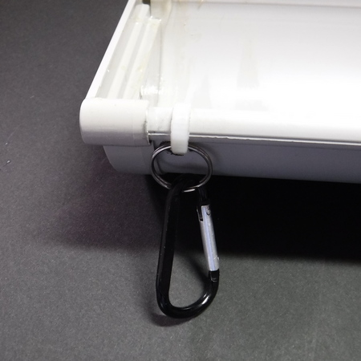
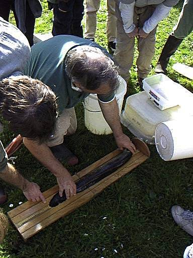
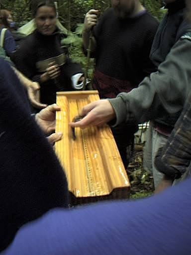
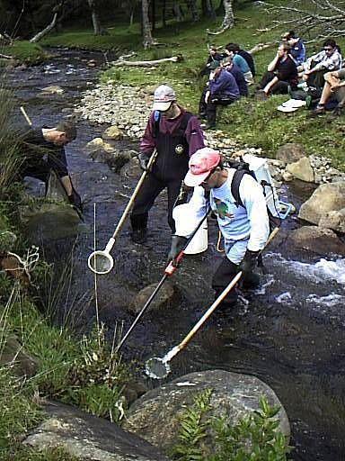
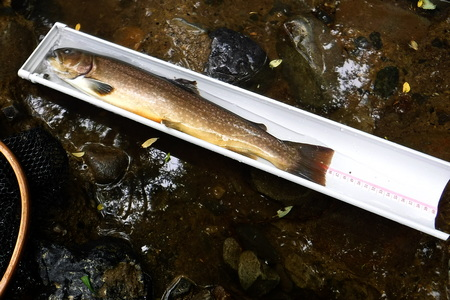
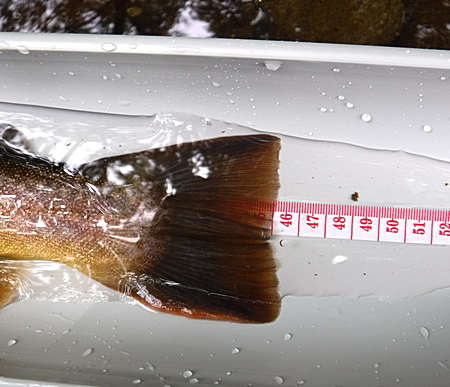

私のお気に入り
自作の道具たち 大型イワナ専用体長測定用メジャー
（非実用的・非推奨）
叔父がまた、例によって例のごとく、
『どこやらの川では、いつやらの時期に、大物イワナが下流から遡上して来る......。女房とドライブがてら行って弁当を食べていたら、確かに大きな魚影を見たから間違いはない！』
と言うので、次の週末に行ってみようと、相談がまとまった。
これまで幾度となく、痛い目とまでは言えないものの、まったくの空振りに終わってばかりなので、このテの釣行には、あまり期待はしていなかった。
ところが、である。
行きつけのホームセンターをブラブラしていたら、Panasonic ブランドの樹脂製雨どい（あまどい）が目に入った。
『！！！』
ひょっとして、これを使えば、魚にダメージを与えず、逃げられることもなく、速やかに大物イワナの体長を測り、撮影してからリリースすることができるのでは？ とヒラめいた。（笑）
加工サービスコーナーのおじさんに、よせば良いのについ欲張って、180cm の雨どいを「60cm」３本にカットして下さいと、お願いする。40cm もあれば充分なのだが.....。
帰り道、これまたいつもの百円ショップに寄って、テープメジャーを買う。
材料および工具
- 樹脂製雨どい
作例では、断面が半円形ですが、もう少し幅のある浅いＵ字型、あるいは浅い角形の方が良いでしょう。Panasonic の雨どいは幅が狭いので、細長い体型の魚、例えばイワナ、ナマズ、ウナギ、雷魚、タチウオ、ヤツメウナギ、くらいにしか通用しそうにありません。（泣） - 雨どいに適合した端部のフタ？
雨どい売り場の近くに置いてあるはずです。作例では、リリースする時に魚がスムーズに出て行けるように、片方だけフタをしました。 - テープメジャー（百円ショップ）
- クリアボンド
- 透明厚手ガムテープ
- 電動ドリル（もしくは太めのクギ・ペンチ・百円ライター／ローソク）
- 金属製小型カラビナ（百円ショップ）
- プラスチック製タイバンド（やや太めで丈夫なもの、百円ショップ）
製作方法
- 適当な雨どいを選び、ホームセンターで切断加工してもらう。長さはお好みで。（笑） 車で運べて、切断工具がある方は、ご自分でどうぞ。
長ければ当然大型魚にも対応できますが、渓流釣りの場合、携行がとても面倒になります。ボートでの釣り、あるいは堤防などで居座って釣るのであれば、いくら長くてもＯＫです。 - カットした雨どいの端部に、クリアボンドでフタを接着します
- テープメジャーを、フタの垂直面にゼロ点が来るように位置決めして、クリアボンドで、雨どいの中心線に沿って貼り付けます。

- テープメジャーが剥がれないよう、傷つかないよう、厚手の透明ガムテープを全長に渡って上から貼ります

- 雨どいのフタをした方の端部側面に、携行用カラビナを保持するための穴を開けます。ドリルのある方は、適当な太さのドリルで加工して下さい。ドリルをお持ちでない方は、太めのクギをペンチで保持してライターで熱し、充分熱くなったら雨どいの樹脂に突き立てて穴を開けます。おそらく１回では開かないので何度か繰り返し作業して下さい。
- 穴が開いたら、タイバンドを通し、そこに金属製カラビナを固定します。

渓流釣りの川歩きで携行する場合、ベルトにカラビナを通すか、デイパックに結わえ付けます。
実際の使用時には、大型のランディングネットと併用して、まず魚をネットにすくい入れます。次に、ネットの中に雨どいメジャーの「ゼロ点：フタを付けた側」を差し入れ、濡らしてから、おもむろに魚の頭部をゼロ点に向けて、メジャーの中に入れます。しばらく魚を休ませ、静かになったら、ネットの外に出して撮影します。（なんて、できたらいいな.....）
この物体をブラブラさせながら歩いている途中、出くわした他の釣り人、あるいは地元の方に
「いったいそれは何ですか？」
と聞かれた時のために、それらしい言い訳を考えておいて下さい。
例：「山芋が掘れたら、長さを測るためです.....」
ボート釣りで使うのなら、言い訳は必要ないですね。（笑）
で、この魚の体長測定用メジャーには元ネタがありまして、ＮＺ留学中、現地調査に行った時、研究室の備品に大型魚と小型魚、それぞれに適したサイズの木製メジャーを使ったことがあったのです。大型魚用には中央にちょうつがいがあり、折り畳めるようになっていました。しかし、いかんんせん木製では重すぎるので、今回は樹脂製雨どいで作った次第です。 いったい何を学びに行ったのか.....


「イナンガ：ホワイトベイトの成魚」の体長測定

捕獲、生息状況の調査をしている、ヒックス教授
渓流釣りで実際に使ったとしたら、おそらくこんな感じでしょうか。


私のお気に入り 目次へ
サイトマップ
ホームへ
お問い合わせ